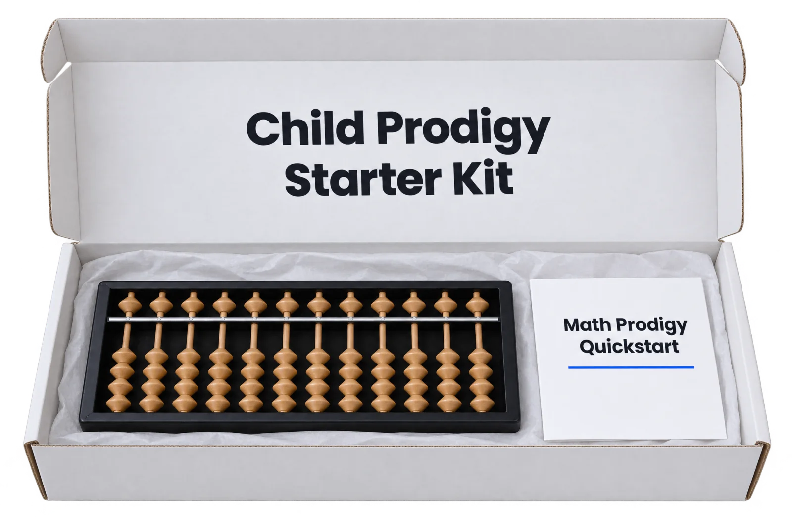

You did it. Your child's kit is on the way.
Inside the box is a soroban, the Japanese abacus: a frame of beads where every number is something your child can see and move. Your receipt is inside your welcome email. Tracking follows when the box leaves, within 2 business days. Your kit arrives within 7 days.

What to do before the box lands
- Open the welcome emailIt has your receipt, your 3-Night Quick-Start and the link to your parent account.
- Open your Playbook tonightSign in to your parent account with the email you ordered with. The Playbook and the audiobook are under "What you own".
- Start tonight on the screen abacusStage 1 is open. Ten minutes reading beads on a tablet makes the wooden one feel familiar the moment it arrives.
- Pick a 15-minute slotSame time every day. After breakfast or right before bed works best. Put it in the family calendar now.
- When the box lands, do Lesson 1 togetherSit beside, not across. Ask "free beads, or friend?" and wait. Lesson 1 in the trainer walks you through the rest.
Your first 3 nights
Your child's kit is a soroban, the Japanese abacus: a small wooden frame with rows of beads. Every number is a bead your child can see and move. After a few weeks, the beads move inside their head, and math gets fast.
Your child's school teaches the word half of the brain. The beads wake up the other half. Pictures and hands. Your child sees the number, moves it, and says it. All of the brain at once. Three nights is all it takes to feel it start.
Start tonight on the screen abacus in your parent account. Sign in at childphenoms.com with the email you ordered with. When the box lands, do the same three nights again with the real beads.
Every night: 15 minutes. Sit beside, not across. Say each move out loud. Praise the move, not the answer. Stop while it is still fun.
- Night 1 · See it, move it, say itPush all the beads away from the beam. Thumb pushes beads up. Pointer finger pushes them down. Bottom beads are 1. The top bead is 5. A bead counts when it touches the beam. Set 1 to 9 out loud. Stuck? Ask, "Free beads, or friend?" Then wait.Why tonight matters: the hands learn the beads. That is the first half of the picture.
- Night 2 · Bigger numbersLeft rod is tens. Right rod is ones. Set 23, 47 and 85. Read each one back. Then cover the abacus and ask, "What did 47 look like?"Why tonight matters: the picture starts to move inside.
- Night 3 · The first friend moveSet 4. Add 1. No free bead! Bring the 5 down and send 4 away. Plus 1 is plus 5, take away 4. Not yet? That is fine. Stage 2 teaches it.Why tonight matters: this is where numbers stop being memorized and start being moved.
Night 4: Lesson 1 is in your parent account. Questions? hello@childphenoms.com
Start Night 1 On The Screen Abacus →Stage 1 is open now. Sign in with the email you ordered with.Thank you for trusting us with this. Week one is about one thing: your child feeling a number click into place on the beads. Protect the 15 minutes. Praise the move, not the answer. And send me the first video. I watch every one.
— Hunter